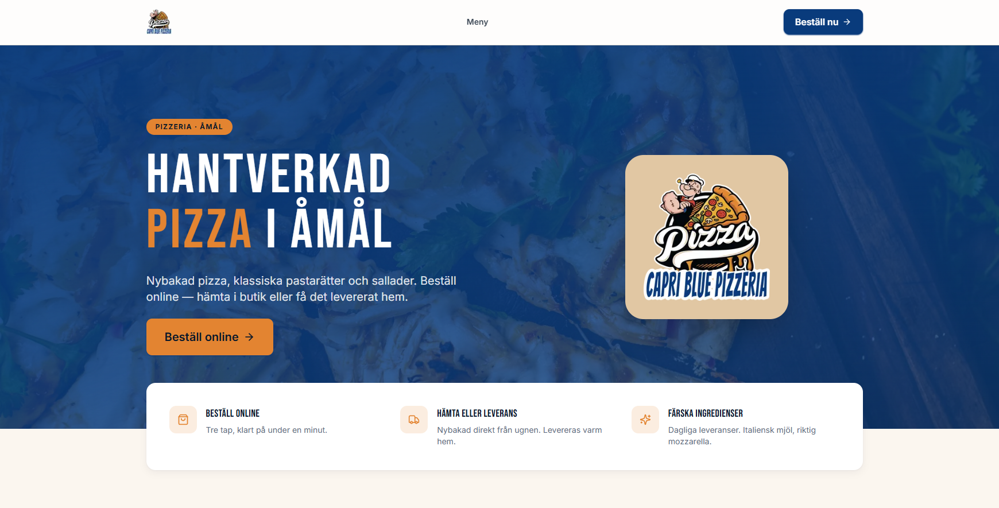
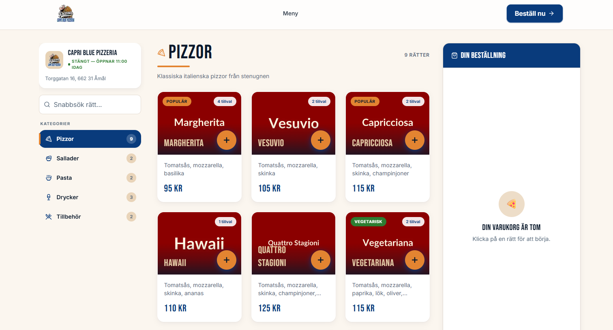
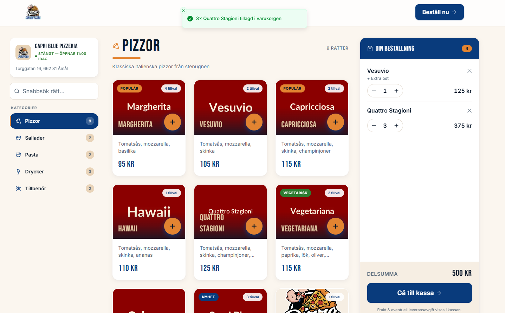
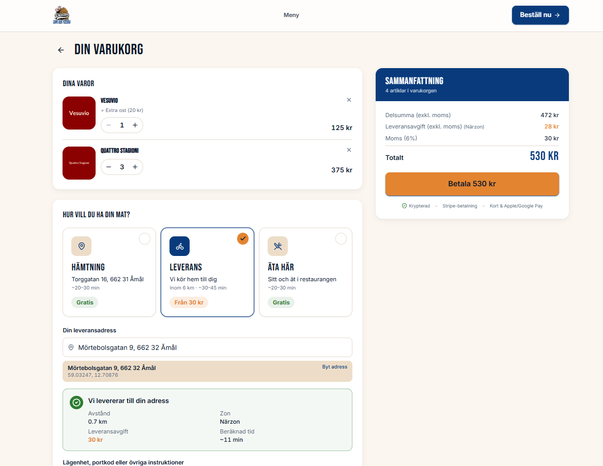

Den dolda kostnaden med Foodora
När du listar din meny på Foodora kliver en ny kostnad in i bilden: provision, beroende och fragmenterad kunddata. Vi går igenom vad som faktiskt hamnar i marginalen.
Läs merProvisionsfri matbeställning, eget beställningssystem och konkret restaurangekonomi. Praktiska guider och case för svenska restauranger 2026.

När du listar din meny på Foodora kliver en ny kostnad in i bilden: provision, beroende och fragmenterad kunddata. Vi går igenom vad som faktiskt hamnar i marginalen.
Läs mer
Två stora plattformar, två avgiftsmodeller och en fråga: vilken levererar mest till restaurangens bottenrad? Här är vad du bör jämföra.
Läs mer
Steg för steg — utan att vara teknisk, utan dyra konsulter, utan att stänga restaurangen en enda dag.
Läs mer
Vi visar hur du räknar hem investeringen — engångskostnad, drift och vad du sparar per order när varje beställning är din intäkt.
Läs merCapri Blue i Stockholm tog tillbaka sin egen beställningskanal — och plötsligt blev matmomsen ett verktyg istället för en risk.
Läs mer